"Design Externship"
Transforming curated content into an interactive learning experience
Overview
Role: Designer, Engineer, Manager
Task: Turn a curated list of design articles into an interactive online learning experience
For over a decade, I immersed myself in daily study, bookmarking the most insightful design articles I encountered. These articles covered a wide range of topics—from psychology to color theory to design philosophy. After I landed my first design job, I began mentoring aspiring designers and these bookmarks were an essential teaching resource.
A wonderful manager I had at Amazon told me “the only difference between a junior, a mid-level, and a senior designer is ‘how many answers they have in their back pocket’.”
Over time, designers get faster at creating designs, they get better at using their tools, but the real difference is not in how well you think, but in how many examples you can “point to”. The more you know, the more mistakes you can avoid. Your advice becomes better through wisdom and experience.
One shortcut you can take in your career is to be proactive in your learning: don’t wait for lessons to come to you on the job; study, learn, make it your passion to know everything you can that’s even remotely-related to your work. You never know when it will come in handy.
I spent hours each week guiding my mentees—helping them build skills, develop portfolios, and break into the industry.
As my career grew, I had less time for one-on-one mentorship, but I still wanted to support aspiring designers and make learning more accessible.
I had seen that the designers who were most successful were also the most proactive in their learning and work, so I compiled my bookmarks into a simple webpage, categorizing them by topic and structuring them in a logical order for self-paced learning. That way, anybody who had the drive to learn could do it with a curriculum of proven-materials. Free knowledge for anyone who had the motivation to come and claim it.
The page has taken on a life of its own, having reached hundreds of learners. The one piece of feedback I consistently receive is “You should turn this into a course (with progress tracking, quizzes, etc.) — you could even sell it!”
The goal for me has always been to share knowledge freely and help people uplift themselves... Also I don’t own any of the content, so I might be in a bit of a “legal gray area” in terms of “selling” it.
Fast forward to today: I own a marketing company, and I am training designers again - this time for my own team. After sharing the bookmarks with my newest designer, I saw an opportunity to turn that user request (“create a course!”) into design challenge. I invited my new designer to collaborate on the design, giving us the chance to experiment with the design in a no-pressure environment.
Here's how it went...
“It was an exciting UX problem—how do you create an engaging course from hundreds of text-based articles while keeping it structured and user-friendly?”
Problem & Goal Statements
Based on feedback I’ve received over the years, as well as my own ideas about issues and opportunities, I compiled a list of Problems and Goals.
Problems with the original list:
- Users often read the list out of order
It’s not necessary to go in order, but it becomes harder to keep track of which articles you’ve read. - There’s no obvious way to “report issues” if a link is broken
Occasionally people will email me, but mostly the problems go unresolved. - The articles are sometimes written by “false” experts
There’s still something to learn from reading the articles, but without context, it’s easy for students to become confused by the mixed messages. - A lot of the articles may seem “irrelevant” based on the title
If students don’t feel like an article is relevant to them, they’re unlikely to read it. - Most articles don’t support ‘dark mode’ or other accessibility features
Students using ‘dark mode’ on their computer will be constantly switching between dark backgrounds and light backgrounds depending on whether or not the publishers support “dark mode” or other accessibility features around typography or colors. - There’s nowhere to take notes or provide feedback
Students often want to take notes and keep them with the source. Likewise, if article is great (or terrible), there’s no way to provide that feedback. - Offering the links doesn’t fully replace mentorship
In addition to the insights I offered, I also helped my students write their résumés, prepare for interviews, apply for jobs, etc. - The design of the page is too simple
Because the page didn’t look “designed” (in the sense of having a nice layout, background-colors, nice typography, graphics and icons, etc), some people didn’t value it as a resource, because it didn’t look like something valuable.
Goals:
- Keep the service free: There's lots of free and paid learning content on the web, so if we can't compete on "quality" (in this case, in terms of brand recognition), then we have to compete on price
- Give context to the links with summaries and key-points for each article
- Make it easy to “flag” broken links so that I can find and fix them more quickly
- Offer backups of the articles in case the publisher takes the content down
- Keep operational costs to a minimum: If we're not charging for the service, then we need to figure out how to offer it as inexpensively as possible
- Improve the layout and experience on “smart phones” and other small-screen devices
- Add basic “quality of life” features to help students keep track which articles they’ve read, or find articles they want to come back to
- Add accessibility features to respect “dark mode” settings and improve readability where possible
- Separate out links to tools or other online courses so that they’re easy to find and don’t get lost among the articles
- Reduce our reliance on opening new tabs for each article
- Implement some “gamification” features to help students stay motivated and encourage them to work through all of the content
- Add quizzes or other tools to help students review what they’ve learned or quickly return to articles they need to review
- Find ways to monetize that don’t require “gate-keeping” the content behind a subscription fee or paywall
- Leave the door open to expand into features and tools that can help students land jobs
UI Concepts
What started as a fun design exercise quickly gained momentum. We sketched layouts and refined the structure. Coming up with these wireframes helped us have a cohesive language and helped us imagine what it would be like to use the service.
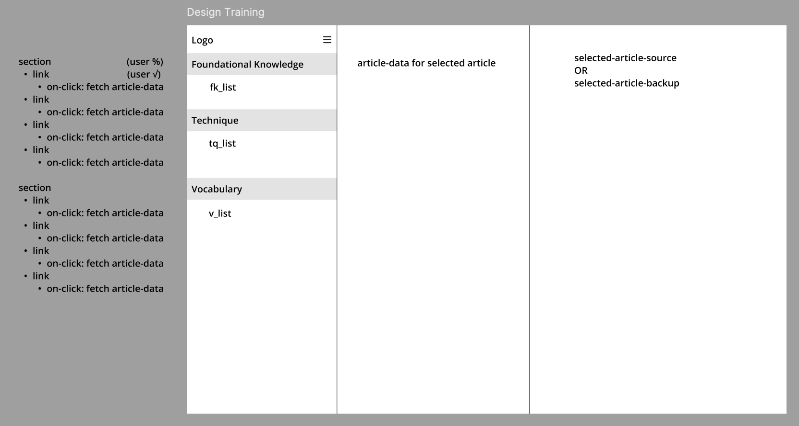We considered user flows, ways to encourage engagement, and how to make the learning experience as seamless as possible.
Next we took notes on the data we would need. We wanted to track the author, title, source, and url... etc.
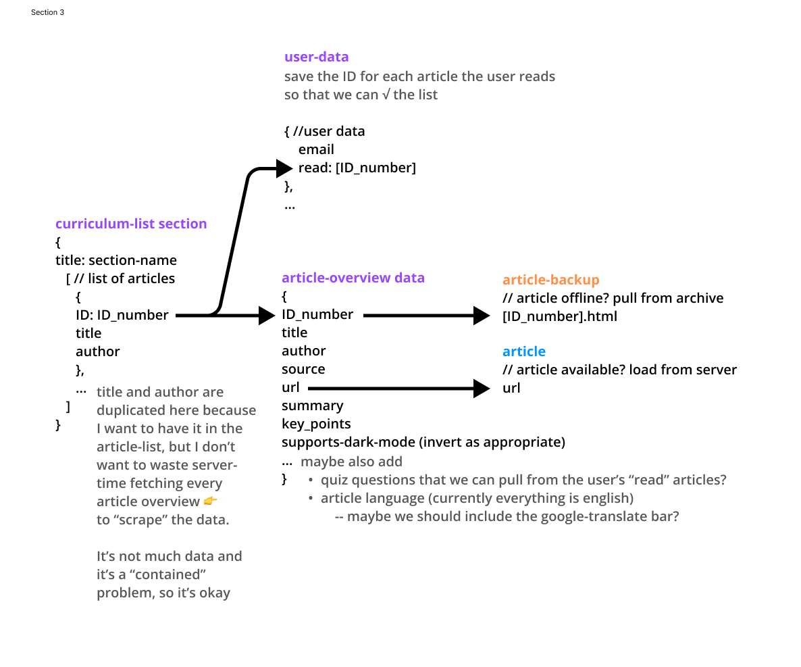Since we knew we were wanted to load the list of all articles, it was important to have a really light-weight bit of data containing all of the links.
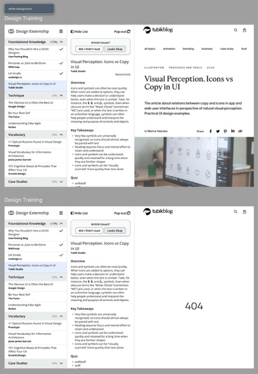There are hundreds of links, so it would be too much to load the data for all of the articles at the same time. Instead, we decided to separate out all of the “article data” (the summary, key points, etc) and then just load it when the user clicks on the corresponding link.
It’s really valuable to think about flows and to consider what data you need on each page. The engineers will make the final call about what’s best for the system, but if you can explain your ideas and reasoning, that can help them design a system that works even better.
As the designs came together, the work became more fun and thrilling. Pretty quickly we were exploring design variations and trying to develop the brand.
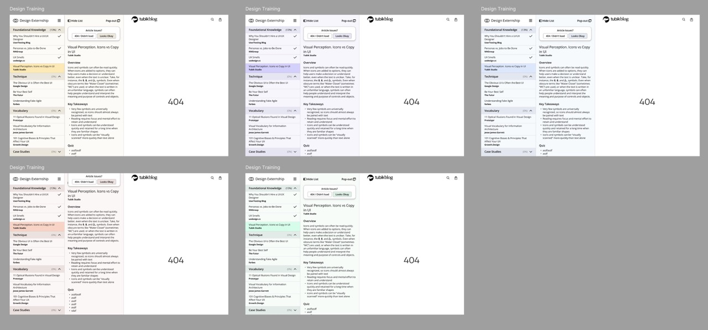While this product started as a fun design exercise, the project quickly gathered momentum, and soon we were excited-enough to develop it. That’s a good lesson in design: “Even if an idea is great, a lot of times people have to literally see it (or see design mock-ups) before they can imagine it and get excited about it”. That even applies to experienced designers like me.
Finding Issues
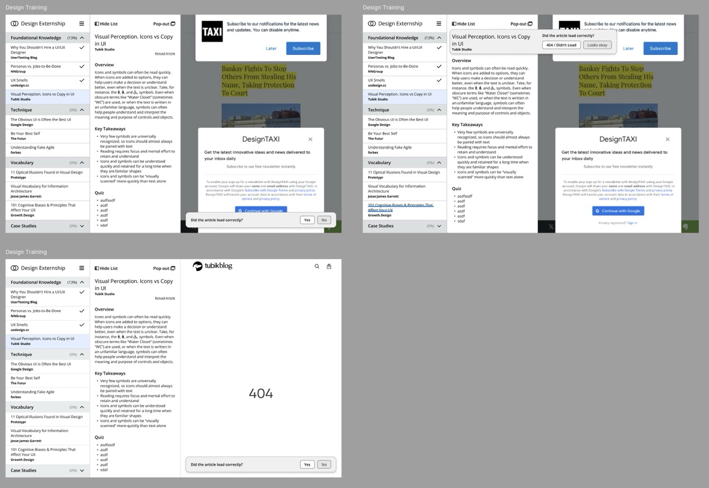Through prototyping and testing, we refined the experience further. We made adjustments to the structure, improved readability, and looked for areas where the UI might end up getting cluttered or unwieldy.
By bringing screenshots of chaotic-looking websites into our design (an example of “bad data” for our use case), we realized that some of our ideas involving putting toolbars over the content wouldn't work.
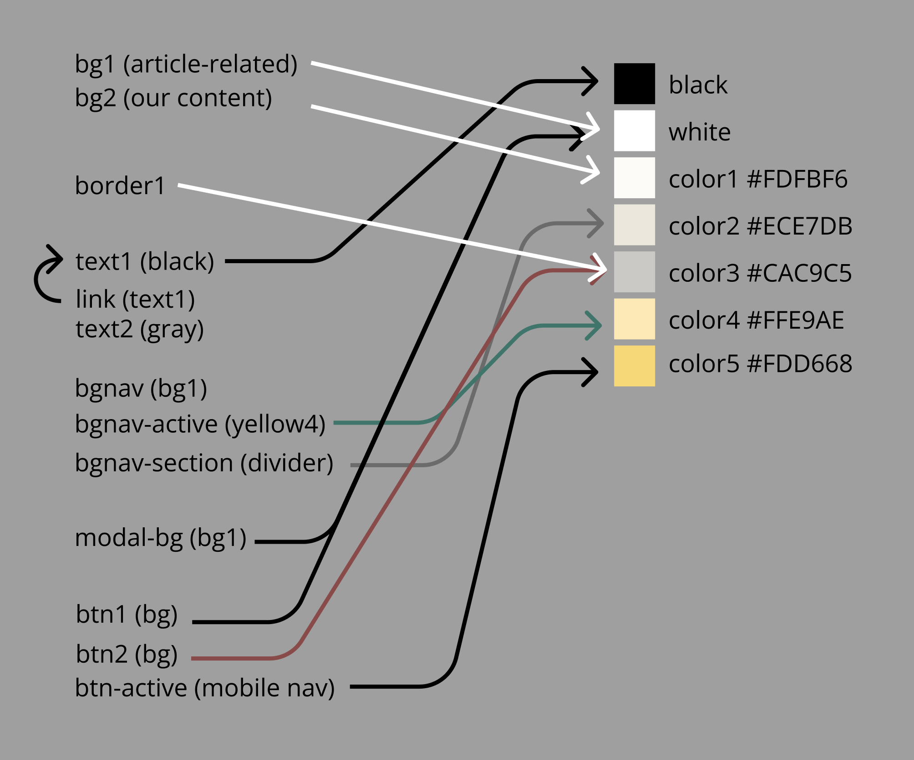As we became more-confident in the design, we also worked to align our language and streamline our color palette.
As the design started taking shape, we came up with more ideas for how to take the product further. In my experience, these
✨ ideas✨ are some of the most valuable things you can contribute as a designer. It doesn’t matter if they ever get built; write them down, make concepts and share them — who knows what you’ll inspire.
Expanding Scope
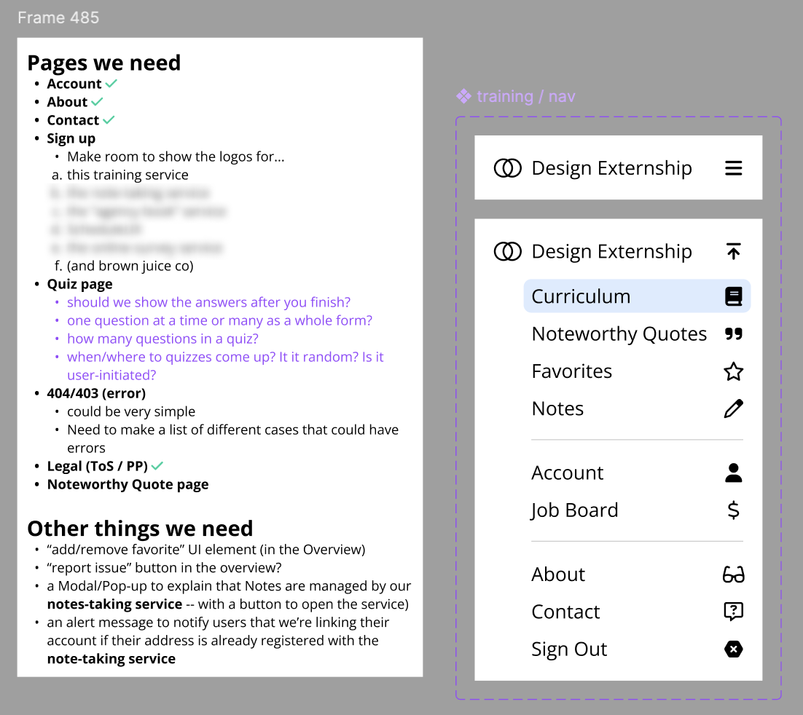A nice UI is great, but without the supporting pages (sign-up, privacy, error pages, etc), it’s not really a complete product. We created a list of the pages we thought we might need and tried to fit them into a mock-up navigation.
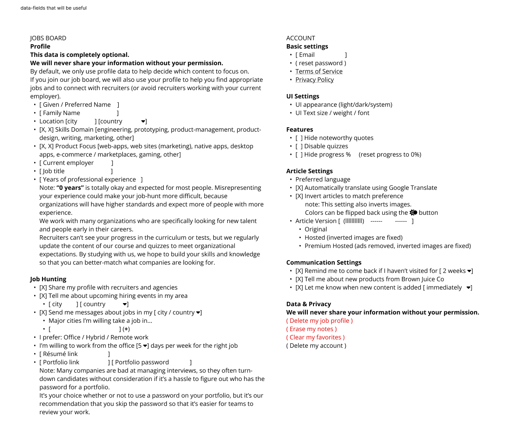We also thought of ways we could naturally flow the UX into a “jobs board” so people studying could also see job openings and think about (or brush up on) articles that might be related.
A jobs board is a whole product in its own right, but it’s feels related because (as far as we can tell) most people who are studying are either trying to land a job or advance their career.
That was still the perfect time to start thinking of other features, because it’s still fast to discuss, explore, and decide the direction before the product goes to engineering.
Prototyping
Because we knew we wanted to load the articles on the same page, there’s only a few ways to do that on the web. The main way is called an iFrame.
I think it’s immensely valuable to have web-dev skills as a designer, because you can test out ideas and prototype things that your engineering team might not have the time to research or experiment with.
Here you can see a quick test I did where I edited the code for Brown Juice Co’s homepage and replaced the header with an iFrame.
Once I added the iFrame, I was able to style it a bit with CSS and I learned that you can invert the contents of an iFrame with CSS styles.
“Prototyping” sounds like a big, daunting concept, but sometimes a “prototype” is as simple as just editing a few lines of code in your browser’s ‘developer tools’.
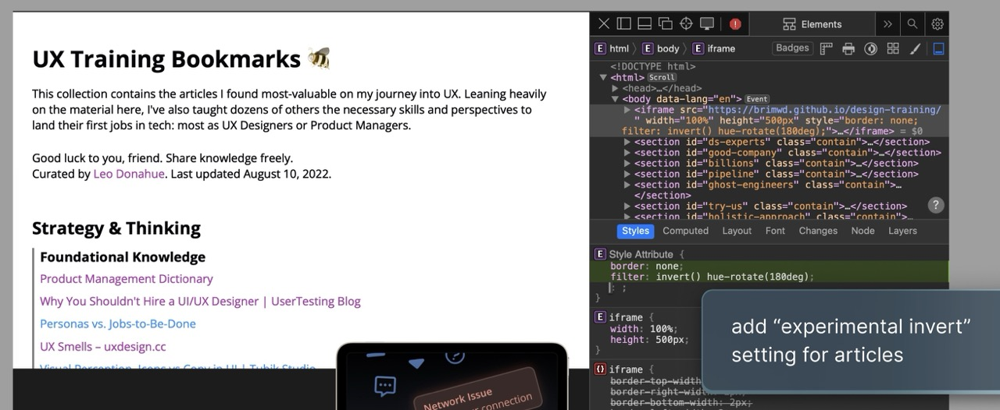Once I knew I could invert the articles, then it also became useful to know the site’s ‘color scheme’ (at least in terms of light vs dark) so that we can invert it to match the user’s preferences.
Responsive Design
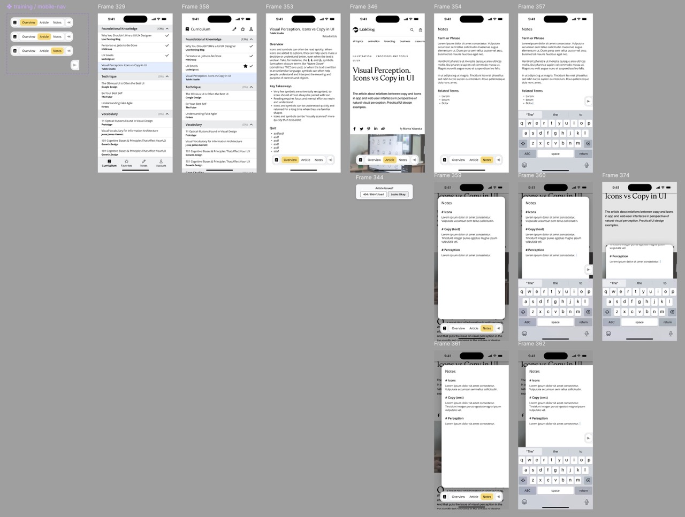When designing for the web, it's critical to consideration how the UI will look on other screen sizes and aspect ratios.
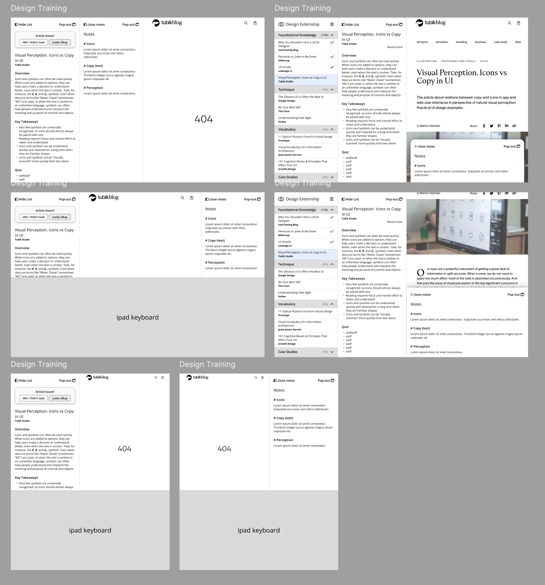We knew what we wanted our 'desktop' layout to look like, so we next started exploring how the UI should work on 'mobile'.
Bringing It To Life
Once we felt confident in our design, I was able to developed a basic ‘MVP’ (minimum viable product) from our notes with just a few days of work.
We launched our MVP on February 20, 2025.
Now that the MVP is live, we can start aiming for the "minimum lovable product"
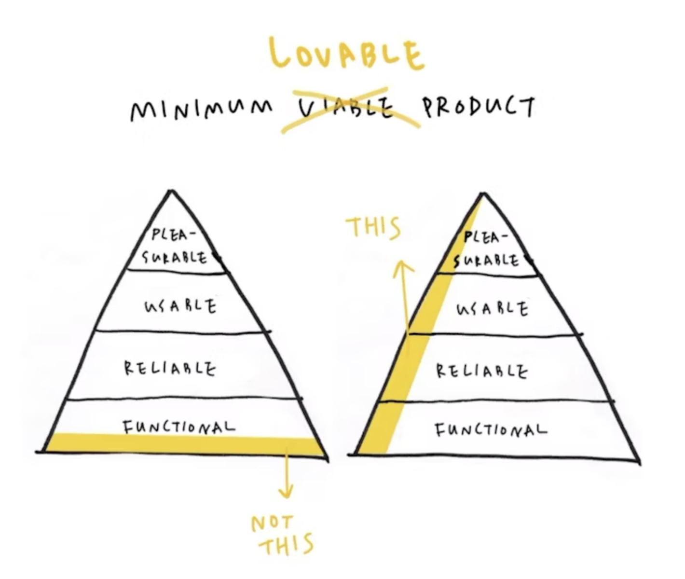From here, most teams would start adding new big features to make the application solve new problems. We want a product that people will love, though, so we'll instead focus on improving the features we have.
The idea is "one main function that works well" rather than "10 major functions that all work poorly and inconsistently".

For today, that means adding the missing supporting pages and some "quality of life" improvements. One feature that didn't make the cut for the MVP is making it so that the site can load directly to a selected article when someone shares a link. We're hoping that "word of mouth" marketing will help people find this resource, so making it easy to share specific links feels like a high priority -- even higher than allowing people to "create accounts" (which I think most product teams assume will be a default MVP feature).
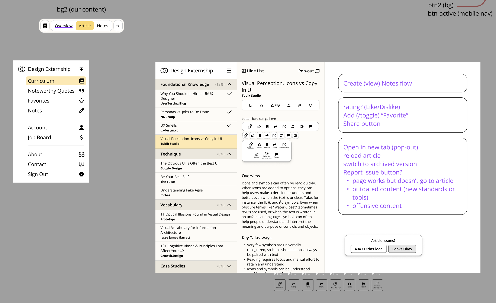We're also working to improve some of the layout and small functions like designing the UI for users to "report issues", refresh the article, and share directly to social media.
Conclusion
Want to grow your skills or learn something new?
Check out our app, it's free!